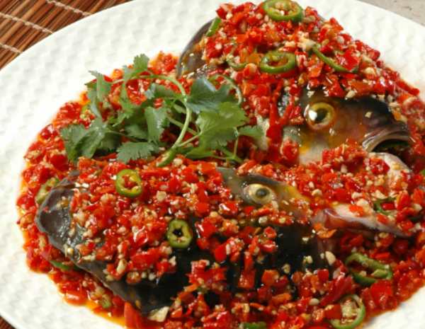

Fish Head with Chopped Pepper

Description
Fish Head with Chopped Pepper (Duo Jiao Yu Tou, 剁椒鱼头) is a famous Hunan dish known for its spicy, savoury, and aromatic flavours. A large fish head (usually from carp or grouper) is steamed with a generous amount of fermented chopped red chillies, garlic, ginger, and soy sauce. The dish is tender, juicy, and packed with bold and fragrant heat, making it a favourite in Hunan cuisine.
Ingredients
- 1 large fish head (about 600g, carp or grouper)
- 3 tbsp chopped red chillies (fermented duo jiao or fresh red chillies)
- 1 tbsp ginger, minced
- 2 cloves garlic, minced
- 1 spring onion, chopped (for garnish)
Steps
- Prepare the fish head – Clean it thoroughly, cut in half (if needed), and rub with salt and Shaoxing wine. Let it marinate for 10 minutes.
- Prepare the sauce – In a bowl, mix chopped red chillies, garlic, ginger, soy sauce, sugar, and white pepper.
- Assemble for steaming – Place the fish head on a heatproof plate, spread the chilli mixture evenly on top.
- Steam – Place in a steamer over boiling water and steam for 15–20 minutes, depending on the size of the fish head.
- Heat oil – In a separate pan, heat vegetable oil until smoking hot, then pour over the fish to release aromas.
- Garnish & serve – Sprinkle with chopped spring onions and serve hot with steamed rice!
Home page